Eleven distinct scenes with the Unit cards’ painted outlines and colors. Select a card to open it at full size.
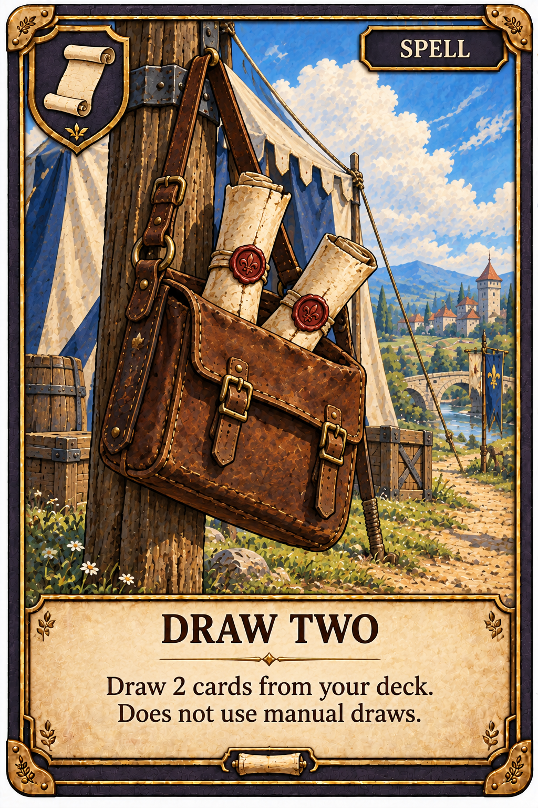
Draw 2 cards from your deck. Does not use manual draws.
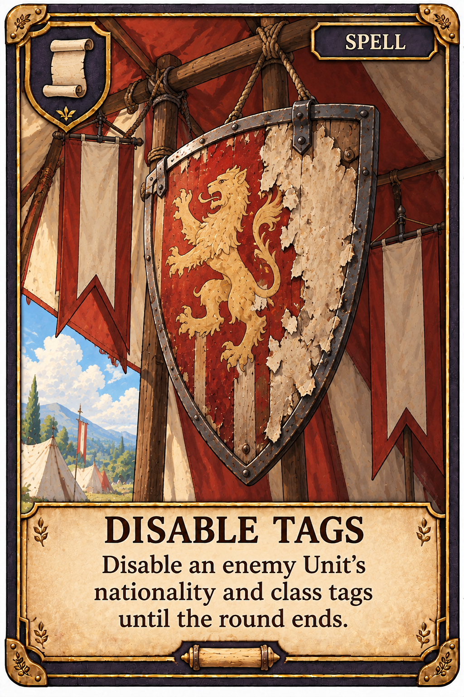
Disable an enemy Unit's nationality and class tags until the round ends.
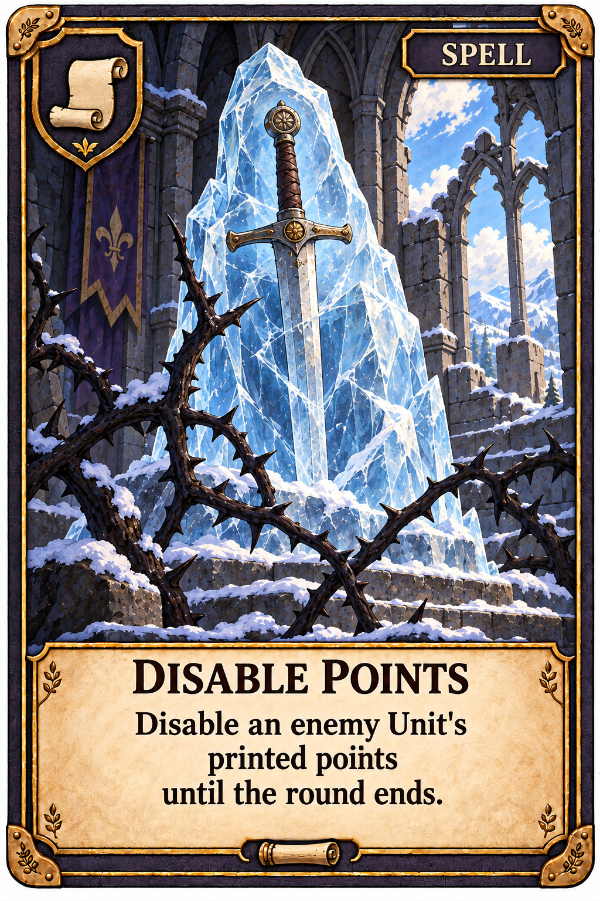
Disable an enemy Unit's printed points until the round ends.
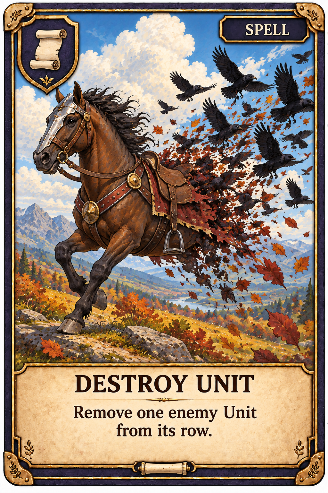
Remove one enemy Unit from its row.
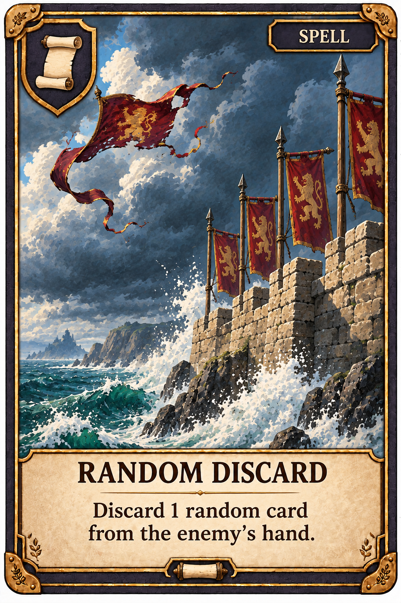
Discard 1 random card from the enemy's hand.
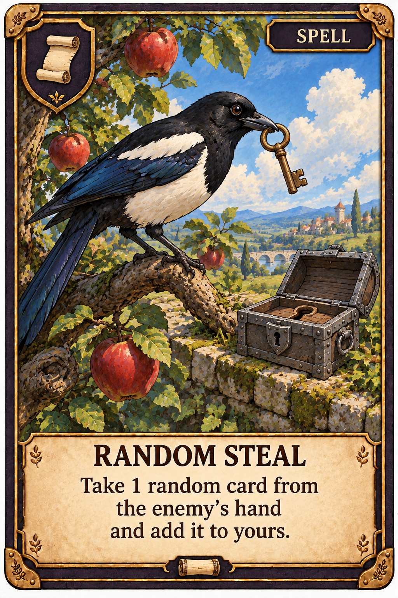
Take 1 random card from the enemy's hand and add it to yours.
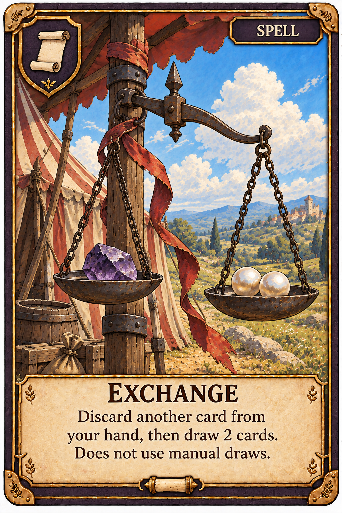
Discard another card from your hand, then draw 2 cards. Does not use manual draws.
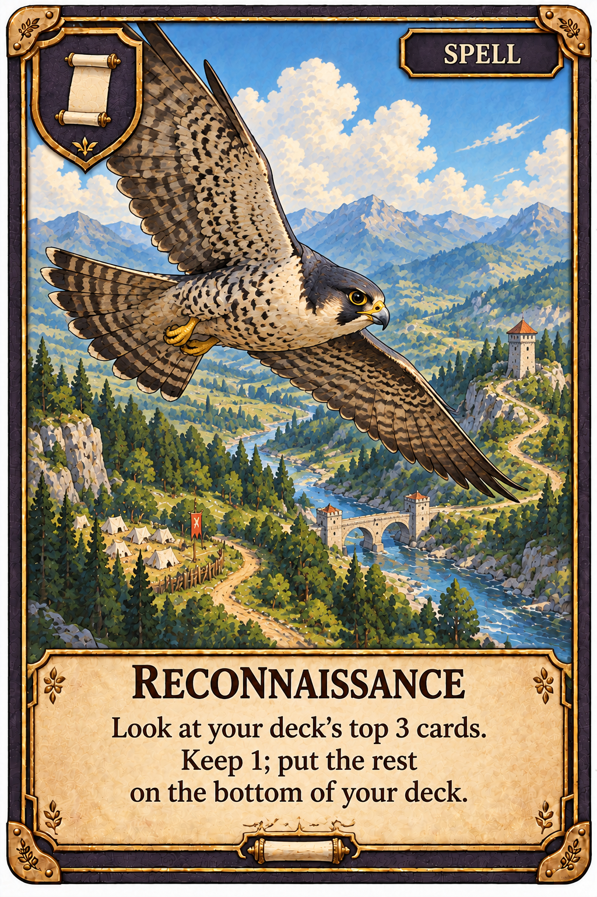
Look at your deck's top 3 cards. Keep 1; put the rest on the bottom of your deck.
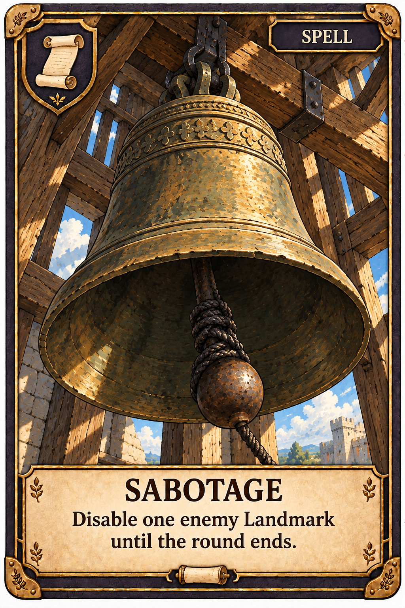
Disable one enemy Landmark until the round ends.
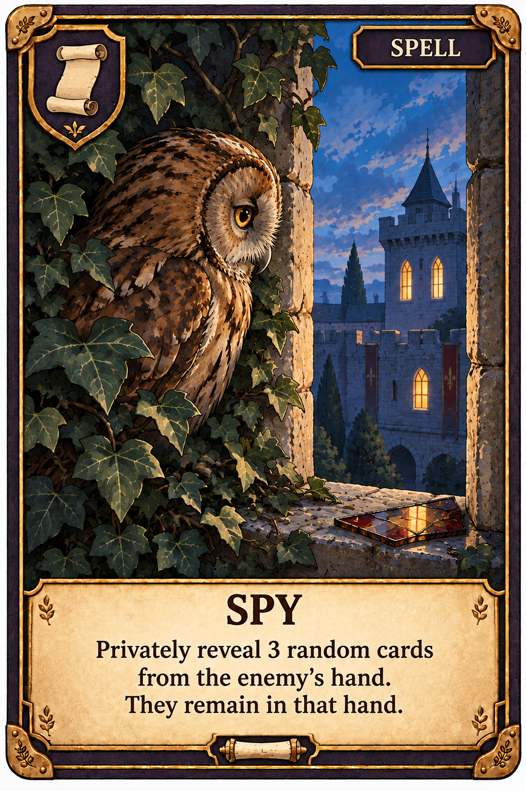
Privately reveal 3 random cards from the enemy's hand. They remain in that hand.
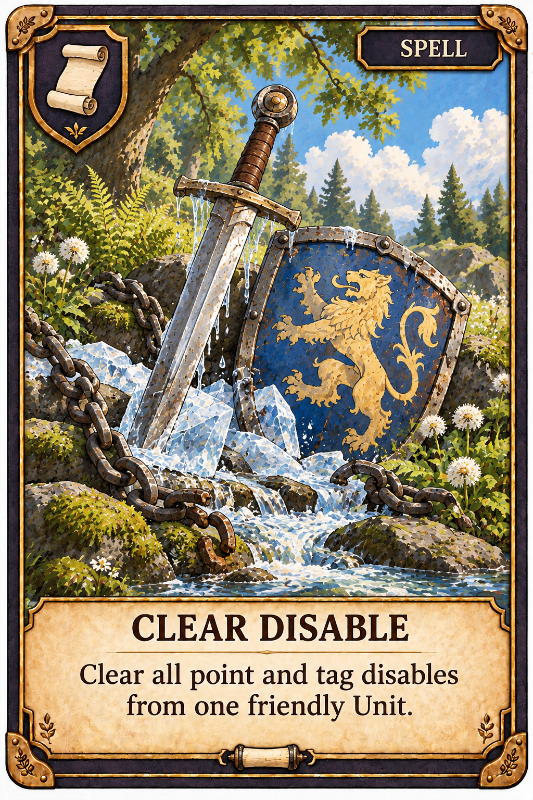
Clear all point and tag disables from one friendly Unit.